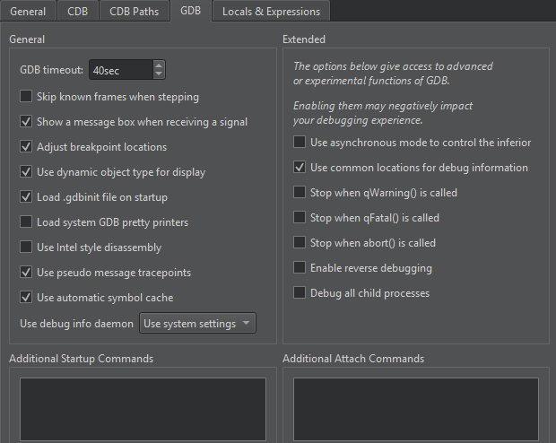

Debug on Android devices
You can use LLDB to debug applications on Android devices that you develop with Qt 5.15.9 or later and Qt 6.2 or later.
Recent releases of Qt Creator have issues with Native (C++) debugging using LLDB on Android.
This was fixed in Qt Creator 17.0.1. To fix this in earlier releases, go to Preferences > Debugger > GDB, and add the following in Additional Attach Commands.
settings set plugin.jit-loader.gdb.enable off

You enable debugging in different ways on different Android devices. Look for USB Debugging under Developer Options. Tap Build number in Settings > About several times to show Developer Options.
Select a debug build configuration to build the application for debugging.
Note: Qt Creator cannot debug applications on Android devices if Android Studio is running. If the following message appears in Application Output, close Android Studio and try again:
Ignoring second debugger -accepting and dropping.
See also How To: Develop for Android, Developing for Android, and Configure on-device developer options.